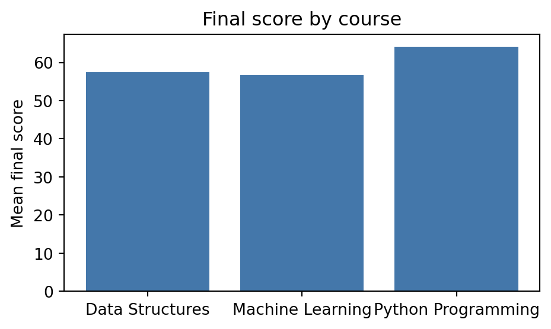
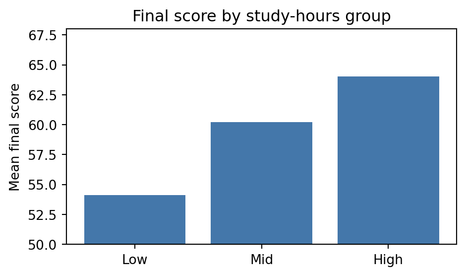
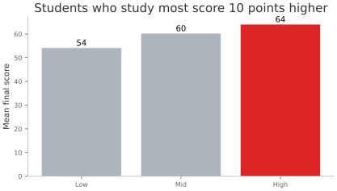

The department head has ten minutes before her next meeting. You have three charts and twelve numbers, and a strong opinion about which courses need help. She asks one question: “So what do I do?” Your charts are correct. None of them answer that.
Chapters 14 through 16 taught you how to build a chart and how to make it honest. This chapter is about the step before any of that: knowing who the chart is for and what they need to decide, diagnosing why a draft chart is not landing, and recognising the moment you stop exploring and start explaining. It closes the Data Visualization part by putting every judgment call from the last three chapters, and both libraries, to work on one real case, start to finish. Chapter 18 picks up the engineering practices, uv, ruff, git, testing, that make analysis like this reproducible.
Name a chart’s audience, decision, and medium, and let medium decide the library
Sec. 1
2
Diagnose a failing chart with the Trifecta Checkup: content, story, or visual form
Sec. 2
3
Decide explore vs explain and change how you build a chart accordingly
Sec. 3
4
Rebuild one explanatory chart in matplotlib and lets-plot for two different mediums
Sec. 4
5
Produce one explanatory chart, backed by a one-paragraph brief, from a real dataset
Capstone
1. Audience, decision, medium
Every chart decision so far assumed the audience was you: fast defaults, all the data, nothing hidden. The moment someone else needs to act on what you found, three questions come before any chart type: who is this for, what do they need to decide, and how will they see it? Skip these and even a perfectly honest, perfectly decluttered chart can still miss.
import pandas as pddf = pd.read_csv("data/university_analytics.csv")# Same three-course, three-Fall-cohort slice as Chapters 14 to 16: the# department head's question is about these students specifically.courses = ["Machine Learning", "Data Structures", "Python Programming"]semesters = ["Fall 2022", "Fall 2023", "Fall 2024"]results = df[df["course"].isin(courses) & df["semester"].isin(semesters)].copy()results.head()
student_id
cohort
program
gender
region
guardian
has_internet
course_id
course
semester
enrollment_date
study_hours
attendance_pct
midterm_score
final_score
project_score
final_grade
passed
0
S0001
2023
Information Technology
F
South
Father
True
C01
Python Programming
Fall 2023
2023-09-04
10.8
88.6
49.9
58.2
61.6
C
True
2
S0001
2023
Information Technology
F
South
Father
True
C03
Data Structures
Fall 2023
2023-09-04
23.6
71.5
54.1
60.9
79.8
C
True
4
S0001
2023
Information Technology
F
South
Father
True
C05
Machine Learning
Fall 2023
2023-09-04
16.2
63.2
48.4
54.2
51.8
D
True
6
S0002
2023
Data Science
M
West
Mother
True
C01
Python Programming
Fall 2023
2023-09-04
17.4
67.0
93.6
60.5
67.0
B
True
8
S0002
2023
Data Science
M
West
Mother
True
C03
Data Structures
Fall 2023
2023-09-04
30.4
84.9
67.4
93.5
70.6
B
True
Key Concept: Audience, decision, medium
State three things before opening a plotting library: who will read this chart, what decision they need to make after seeing it, and how they will see it (a live presentation, a slide they read alone, a printed appendix). The same numbers, shown to a department head deciding whether to fund a study-hall program, need a different chart than the same numbers shown to a student checking their own grade.
Medium has a second consequence beyond how the chart is framed: it decides which library you reach for. matplotlib (Chapter 14) renders to a static image, the right choice for a printed report or a slide someone reads without you in the room. lets-plot (Chapter 15) renders to interactive HTML by default, the right choice for a live meeting or a notebook the reader scrolls through and hovers over themselves. Neither library is more correct: the medium decides, the same way it decided in Chapter 16, Section 5.
Activity 1 - Name the audience before you plot
The department head is deciding whether to fund a mandatory study-hall program next term.
1. Fill in a dict: brief = {“audience”: …, “decision”: …, “medium”: …}. 2. audience: who reads this chart. 3. decision: the one thing they do differently depending on what the chart shows. 4. medium: how they will see it (live meeting, slide, printed report).
Expected: three short, specific answers, not “everyone” or “management”.
# TODO: fill in the briefbrief = {"audience": ..., "decision": ..., "medium": ...}brief
Here is a first attempt at answering the department head’s question. Something about it is not working, but “make it prettier” is rarely the actual fix:
import matplotlib.pyplot as pltcourse_scores = results.groupby("course")["final_score"].mean()fig, ax = plt.subplots(figsize=(5, 3))ax.bar(course_scores.index, course_scores.values, color="#4477AA")ax.set_ylabel("Mean final score")ax.set_title("Final score by course")fig.tight_layout()

Key Concept: The Trifecta Checkup
Berinato’s Trifecta Checkup diagnoses a failing chart with three questions, asked in order: (1) Content: is the underlying analysis right, is this even the correct number to show? (2) Story: is there one clear message, could a reader state it in one sentence? (3) Visual form: is the chart type and design right for that message? Fixing (3) before checking (1) is polishing the wrong number. The chart above actually has real content: Machine Learning students do score noticeably lower than Python Programming students. It still fails the content check, for a subtler reason: “course” is not something the department head can act on. She is deciding whether to fund a study-hall program, an intervention aimed at how students study, not at which courses exist. Correct content and useful content are two different questions.
Fixed for content: not because the course numbers were wrong, but because they were not actionable. Group students by how much they studied instead of by which course they took, since study hours is the variable a study-hall program can actually change:
Content is fixed. Visual form has its own, independent failure mode: the same correct numbers, drawn dishonestly. Here is the same chart with nothing changed except the y-axis limits:
fig, ax = plt.subplots(figsize=(5, 3))ax.bar(score_by_bucket.index, score_by_bucket.values, color="#4477AA")ax.set_ylabel("Mean final score")ax.set_ylim(50, 68)ax.set_title("Final score by study-hours group")fig.tight_layout()

Common Mistake: A visual-form problem can hide behind correct content
Both charts above plot the exact same three numbers. The second one starts its y-axis at 50, the same truncation lie from Chapter 16, and it makes the Low-to-High gap look roughly three times larger than it is. Content and visual form are independent checks: this chart passes (1) and still fails (3). Run all three questions every time, even when an earlier one already passed.
Content and visual form both check out on the honest, zero-baseline version. Now the story check: does this chart state one message, or does the reader have to find it? Right now, nothing points at the answer: the department head still has to read three bar heights and work out the gap herself.
Activity 2 - Run the Trifecta Checkup
Diagnose the truncated-y-axis chart from Chapter 16’s capstone using the three questions.
1. Content: is the number plotted the right one for the question being asked? 2. Story: could you state the message in one sentence? 3. Visual form: is the chart type and axis honest?
Write one short sentence answering each question.
Expected: that chart’s problem is visual form (the y-axis), not content or story: the checkup should say so explicitly, in order.
# TODO: one sentence per questioncontent_check ="..."story_check ="..."visual_form_check ="..."
3. Explore vs explain
Every chart in Chapters 14 to 16 so far has been exploratory: fast, all the data, default styling, built to help you understand. The department head does not need to explore. She needs the one message, explained.
Key Concept: Explore, then explain
An exploratory chart is for you: fast, shows everything, default styling, built to find a pattern. An explanatory chart is for someone else: filtered to the one message, branded, annotated, built to make a decision easy. The transition point is the moment you can write the “so what” in one sentence. Until you can write that sentence, you are still exploring, no matter how polished the chart looks.
The study-hours chart passed content and visual form. What is missing is the explanatory layer: the branding from Chapter 16 and an annotation that states the message, not just shows it. The department head asked for a printed handout, so matplotlib is the right tool here:
from ark.plot.matplot_theme import configure_matplotlib_styleconfigure_matplotlib_style(font_size=10, fig_width=5)gap = score_by_bucket["High"] - score_by_bucket["Low"]fig, ax = plt.subplots(figsize=(6, 3.5))colors = ["#DC2626"if b =="High"else"#ADB5BD"for b in score_by_bucket.index]ax.bar(score_by_bucket.index, score_by_bucket.values, color=colors)ax.set_ylabel("Mean final score")ax.set_title(f"Students who study most score {gap:.0f} points higher")for i, v inenumerate(score_by_bucket.values): ax.text(i, v +1, f"{v:.0f}", ha="center")fig.tight_layout()

Activity 3 - Write the “so what”
Write the one-sentence takeaway the chart above is making explicit.
1. State the point gap between the High and Low study-hours groups. 2. Say what the department head should do next, in the same sentence.
Expected: one sentence a reader could act on without looking at the chart at all.
so_what ="..."so_what
'...'
4. One message, two tools
The chart above is right for a printed handout. Now the department head says she would rather review it live, in the meeting, hovering over each bar to see the exact numbers. Same audience, same decision, same message, a different medium, so a different library: lets-plot instead of matplotlib.
from lets_plot import LetsPlot, aes, geom_bar, ggplot, ggsize, labs, scale_fill_manualfrom ark.plot.theme import modern_themeLetsPlot.setup_html()score_by_bucket_df = score_by_bucket.reset_index()( ggplot(score_by_bucket_df, aes(x="study_bucket", y="final_score", fill="study_bucket"))+ geom_bar(stat="identity")+ scale_fill_manual(values=["#ADB5BD", "#ADB5BD", "#DC2626"])+ labs( title=f"Students who study most score {gap:.0f} points higher", x="", y="Mean final score", )+ modern_theme()+ ggsize(500, 320))
Key Concept: The judgment transfers, the tool does not have to match
Every decision that made the matplotlib chart explanatory, one message, one colour reserved for emphasis, a title that states the finding, is unchanged here. Only the + layers changed. This is the payoff of Chapter 15’s grammar: scale_fill_manual() and labs() work the same way regardless of which chart they are attached to, so switching libraries for a medium change costs a rewrite of the drawing code, not a rethink of the message.
Capstone: the department head’s chart
Everything from this chapter, applied once, on one real question: does study time predict performance strongly enough to justify funding a study-hall program, and does attendance tell the same story?
Capstone exercise - The full judgment loop
Produce one explanatory chart and a written brief, start to finish:
Audience, decision, medium: reuse the brief dict from Activity 1. Decide which medium fits: a live meeting or a printed handout.
Content: bucket attendance_pct into three groups the same way as study_bucket, and compute mean final_score per group. Is the gap as large as the study-hours gap?
Story: write the one-sentence “so what” before touching a plotting library.
Visual form: build one chart, branded, that makes the message in step 3 the only thing a reader can take away. Use configure_matplotlib_style() for a printed medium, or lets-plot with modern_theme() for a live one, matching the medium from step 1.
Caption: print the brief and the “so what” sentence beneath the chart.
Hint:pd.qcut(results[“attendance_pct”], 3, labels=[“Low”, “Mid”, “High”]) mirrors the study_bucket code from Section 2.
# TODO: audience/decision/medium brief (reuse Activity 1)brief = {"audience": ..., "decision": ..., "medium": ...}# TODO: content check: mean final_score by attendance bucketscore_by_attendance = ...# TODO: story: the "so what" sentenceso_what ="..."# TODO: visual form: one branded, annotated chart (matplotlib or lets-plot, matching brief["medium"])...print(brief)print(so_what)